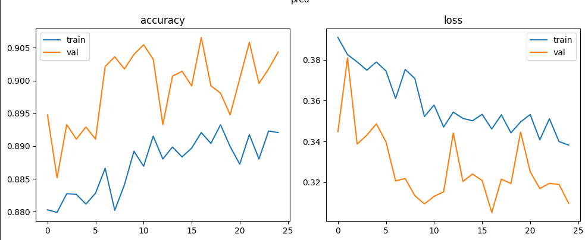
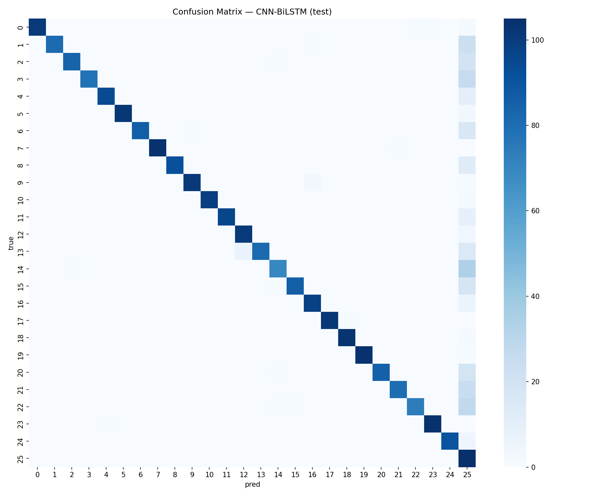
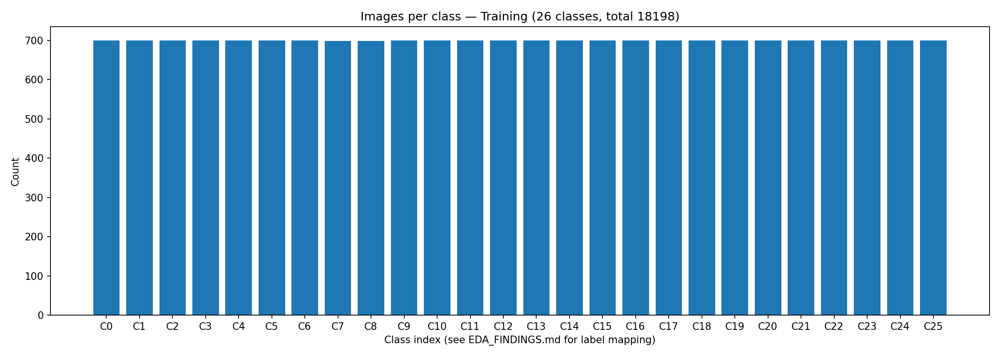
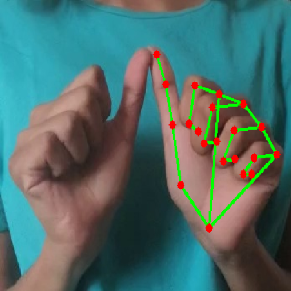

MediaPipe hand landmarks + CNN-BiLSTM translate ISL fingerspelling to text in real time — fully on-device. No video ever leaves your phone or browser.
Runs 100% in your browser: hand tracking via MediaPipe + a tiny 14 KB preview model. Hold a letter steady to add it to your sentence. Full CNN-BiLSTM accuracy ships in the Android app.
First start downloads the hand-tracking model once (~8 MB, Google CDN, cached after). Camera frames never leave this page.
Tip: good lighting, plain background, one hand, hold each sign ~1s. Auto-adds a letter after it stays stable.
Same pipeline in the browser preview and the Android app — the app just uses the bigger tuned model.
MediaPipe finds 21 hand landmarks per frame, on-device, in ~10–30 ms.
Landmark (x, y, z) minus the wrist position — translation-invariant, missing hand = zeros.
CNN-BiLSTM (TFLite, 417 KB) outputs A–Z + confidence; stable predictions build the sentence.
Real datasets only — no synthetic data. Primary set is free and openly licensed.
| Dataset | Classes / size | License |
|---|---|---|
| RealSign ISL A–Z (primary) | 26 classes · 18,198 train + 5,200 test + 2,579 val · 4 signers | CC0-1.0 |
| Ayeshatasnim ISL A–Z | 26 classes · ~12,637 images (~486/class) | Apache-2.0 |
| ISL-Hindi characters (Kaggle) | 40 classes · 48,000 images | Kaggle |
| ISLTranslate / iSign (sentence-level) | 31k pairs / 118k videos | Research |
Sample-split baseline on clean RealSign features.
Final model (KerasTuner search) → exported TFLite for the app.
14 KB nearest-centroid model on the same 63-d features. Fast, honest, runs anywhere.
Numbers: RF 94.9% and centroid 74.4% measured on the local sample split (728 train / 156 test). Full-set Colab results ship with the release.
Training curves, confusion matrix and data checks from the pipeline.




The full CNN-BiLSTM model runs live on your phone — camera → text + confidence + latency per frame. Android 8+.
Rebuild from source: cd app/isl_translator_app && flutter build apk --debug (needs Android SDK + CMake 3.22 + Ninja). First build ~40 min for OpenCV natives.